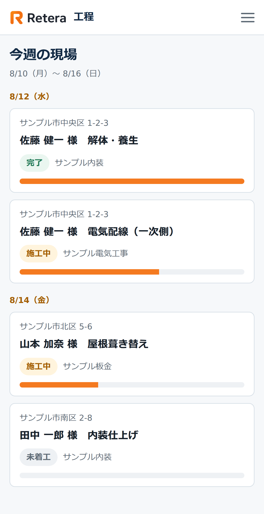
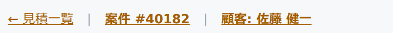
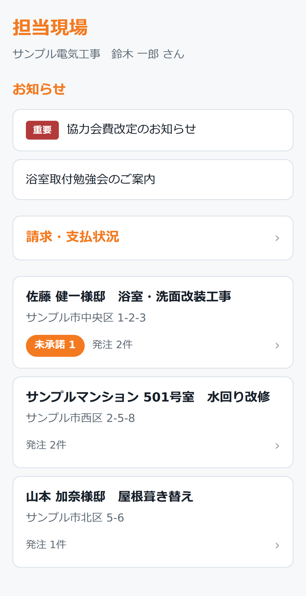
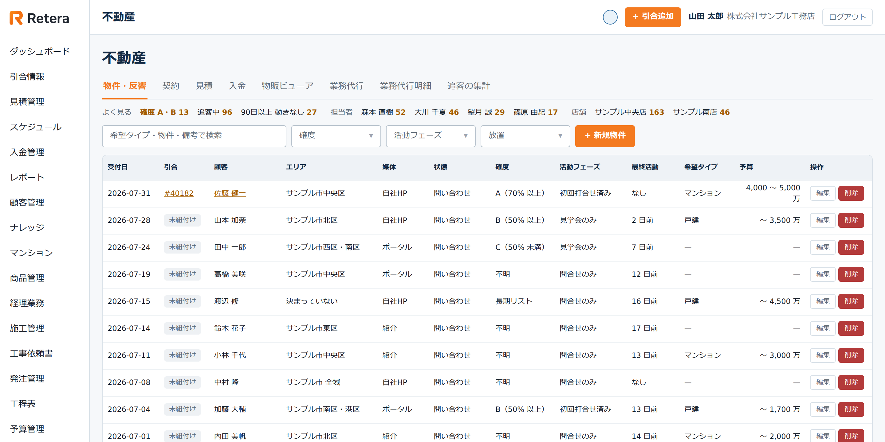

- 引合
- 見積
- 契約
- 工程
- 発注
- 検収
- 請求
- 入金


こんなことが、起きていませんか。
同じことを、何度も打ち込んでいる
お客様の名前と住所を、顧客台帳に入れて、見積書に入れて、契約書に入れて、請求書に入れる。1件の工事で、同じことを何度も打ち込んでいる。打ち間違えれば、どこかで金額が合わなくなる。
システムを別々に契約していて、月額が積み上がっている
工事の管理はこれ、顧客の管理はこれ、経理はこれ。1つずつは高くなくても、合わせると毎月それなりの額になっている。しかもその間はつながっていないので、結局は人が橋渡しをしている。
誰がどの現場を持っていて、どこが遅れているかが見えない
聞けば分かる。でも、聞かないと分からない。遅れに気づくのは、たいていお客様から連絡が来たとき。
協力業者とのやり取りが、電話とFAXとLINEに散らばっている
発注はFAX、日程の変更は電話、現場の写真はLINE。誰が何を受けたのかが、あとから追えない。担当が休むと、その現場のことが誰にも分からなくなる。
- Excel
- 紙・FAX
- メール
- チャット
- カレンダー
- ファイル
業務はつながっているのに、システムだけが分かれている。
RETERA でできること 1
一度入れたことは、二度と入れません。
リフォームの仕事は、引合を受けてから入金まで、1本の線でつながっています。 ところが多くの会社では、その途中でシステムが変わります。変わるたびに、人が打ち直す。
- 引合
- 見積
- 契約
- 工程
- 発注
- 検収
- 請求
- 入金
- アフター
引合で入れたお客様の情報は、そのまま見積に乗ります。 見積で決めた金額は、そのまま契約になり、請求になります。 発注した金額は、そのまま原価として集計されます。
顧客と案件の情報、そして見積から契約・請求へつながる数字を、 工程が変わるたびに打ち直さない設計です。
同じ内容を打ち直さないので、写し間違いが起きません。 「どちらが正しい数字か」を探す時間もなくなります。


画面の上に、引合の案件番号と顧客がそのまま出ています。 見積を作るときに、顧客情報を打ち直していません。
※ 画面はすべてダミーデータで表示しています。
RETERA でできること 2
協力業者に、別のサービスを契約させなくていい。
協力業者は自分のスマホから、受けた工事・発注書・工程・現場写真・資料・ 請求と支払いを確認できます。発注書の承諾や納品予定の報告も、その場でできます。
- 元請
- 別サービス（業者ごとに登録が必要）
- 業者A
- 業者B
- 業者C … 断られる
断られた業者とは、今までどおり FAX と電話が残ります。
- 元請
- Retera
- 業者A業者B業者C
業者側の契約は要りません。説得して回る必要がありません。

案件ごとに図面や資料を保管して、必要なものだけを業者に公開できます。 見せたくないものは、見せずに置いておけます。
RETERA でできること 3
入力した数字が、そのまま経営の道具になります。
業務システムに入れた数字は、たいてい入れっぱなしになります。 月末に誰かが Excel に写して、会議の資料を作る。 Retera は、その作業そのものを無くしました。

-
目標と実績が、同じ画面にあります
社員ごとに期の売上目標と粗利目標を決められます。達成率は社員別と店舗別の両方で見られます。目標を立てる場所と結果を見る場所が同じなので、突き合わせる作業がありません。
-
どの入口が儲かっているかが分かる
媒体ごとに、引合の数だけでなく契約額・利益額・利益率まで追えます。自社集客・手数料媒体・紹介系のグループ別に並び、店舗別・担当者別のクロス集計もできます。どこに広告費を置くかを、件数ではなく利益で判断できます。
-
金額のズレを、自動で拾います
発注した金額と、検収で確定した査定額。その差が5%を超えたものだけを自動で一覧にします。案件・業者・差異率つきで出るので、金額の食い違いを取りこぼしません。
集計のために、月末に Excel を開く必要がありません。
この先は、読まなくても構いません。
ここまでで気になったなら、あとは実際の画面をお見せした方が早いです。
RETERA でできること 4
1件を追う見方と、全体を見渡す見方。両方あります。
1件を縦に追う
種類ごとに横に並べる
この案件は今どこまで進んでいるのか。1件を開けば、顧客・日付・金額・工事先が1画面に並びます。見積・工程・発注・請求へも、ここから切り替えるだけ。担当者が毎日見る見方です。
今週の見積は何件出ているか。遅れている工程はどれか。誰がどの現場を持っているか。担当・状態・金額で絞り込んで、一覧で見ます。管理する側が見る見方です。


※ 画面はすべてダミーデータで表示しています。工事を案件横断で見る画面など、そのほかは機能ページに載せています。
同じデータを角度を変えて見ているだけなので、報告のために誰かが集計し直す作業は起きません。 遅れに、お客様から連絡が来る前に気づけます。
14年の実務が土台にあり、いま、その全部が動いています。
- 36,350顧客
- 43,593引合
- 39,213見積
- 25,742契約
- 49,947入金
- 1,582協力業者
実務で使われ、直され続けてきた土台があります。
2012年、あるリフォーム会社が、自社の業務のために基幹システムを作りました。 それから14年、実際の現場で使われ、直され続けてきました。 Retera は、その設計を土台に、大きく作り直したものです。
汎用の業務システムを、あとからリフォーム向けに寄せたものではありません。 そしてその14年分のデータは、すでに Retera へ移し終えています。 関連会社であるリフォーム会社の、実際の業務データです。空のデモ環境ではありません。
基幹システムの入れ替えで一番揉めるのは、機能ではなくデータの移行です。 Retera は、それを一度やり切ったうえで立っています。
誰が、いつ、何をしたか。記録が残ります。
作成・更新・削除・承認が、証跡として残る。
日時・操作した人・対象・IPアドレスまで記録します。会社法432条と 電子帳簿保存法を意識した、長期保存の監査証跡です。CSV で書き出せるので、 監査のときにそのまま出せます。

- 01
個人情報
保有期間を過ぎたものを検知（個人情報保護法22条）。開示・訂正・利用停止の請求は担当者が受け付けて管理できます（同28条）。
- 02
承認
承認・却下の記録は10年間保存され、画面からは取り消せません。承認者の氏名とメールアドレスまで控えます。
- 03
AI
下書きまで。決めるのは人です。工事依頼書の下書きでは、金額や単価を AI に渡していません。
- 04
月次の締め
締めた時点の受注・完工・粗利を確定値で保存。過去をこっそり書き換えると分かる仕組みを月ごとに連結しています。
- 05
権限
22のロールと29の権限で、タブの表示可否から個別機能まで制御。パスワードは12文字以上・文字種3種以上で、よく使われるパスワードは拒否します。
- 06
置き場所
AWS の東京リージョンで運用します。通信は TLS 1.2 / 1.3 で暗号化します。
RETERA でできること 5
不動産の反響も、リフォームと同じ場所で追えます。
仲介の問い合わせを別のシステムで持つと、 その反響がリフォームの仕事になったのかどうかが、あとから分からなくなります。
- 物件・反響
- 引合に紐付け
- リフォーム工事
- 入金

確度・活動フェーズ・最終活動が並ぶので、止まっている反響が分かります。
リフォームの引合に紐付ければ、そのあとの工事と入金まで同じ流れでたどれます。
※ 画面はすべてダミーデータで表示しています。
扱えるのは、物件と反響、仲介の契約、業務代行です。 今すぐ必要でなくても構いません。その時が来たら、機能を開けるだけで済みます。
使わない機能は、閉じておけます。
会社ごとに、使う機能だけを開けます。
最初から使う
- 引合・顧客・社員
- 見積
- 工程
- 発注
- 請求
- 分析
- 案件資料
- 承認（契約）
必要になったら開く
- 不動産業務
- 物販
- AI（提供準備中）
別々に契約していたものが1つになるので、契約先も1つになります。
1つにまとめるというのは、全部入りを押し付けることではありません。
店舗の数字は、隠しません。
どの店舗がどう動いているか。うまくいっているやり方は何か。 見えるからこそ、真似あえます。
Retera は、店舗ごとに数字を隠す設定を持っていません。 互いの状況が見えることで生まれる相乗効果の方が、大きいと考えているためです。 見せる・見せないは、画面や機能の単位で決めます。
こんな会社に向いています。
- 01複数の店舗、複数の担当で案件を回している
- 02見積から請求まで、同じ内容を何度も打ち込んでいる
- 03協力業者との連絡が、電話・FAX・LINE に散らばっている
- 04会議のために、Excel へ数字を集計し直している
- 05工事管理・顧客管理・経理を、別々に契約している
2つ以上あてはまるなら、
一度ご覧いただく価値があります。
まずは、今の状態を
聞かせてください。
いま何本のシステムを使っているかを伺い、 Retera にまとめられるものと、残した方がいいものを一緒に整理します。
- 1
今の運用を聞く
- 2
Retera の画面を見る
- 3
整理する
- 4
次の進め方を相談
その場で決めていただく必要はありません。